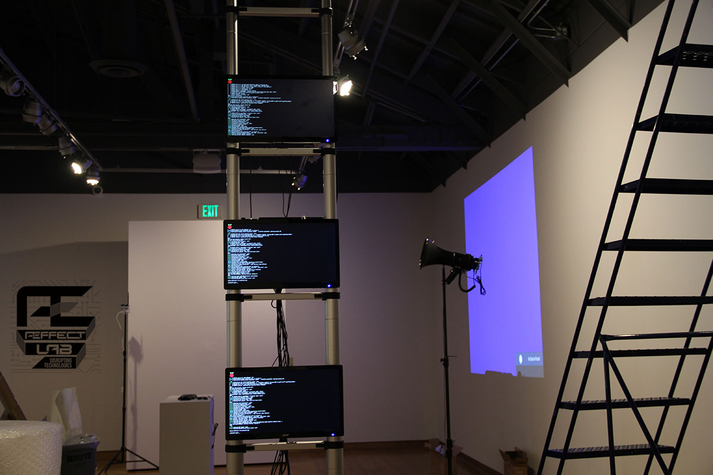
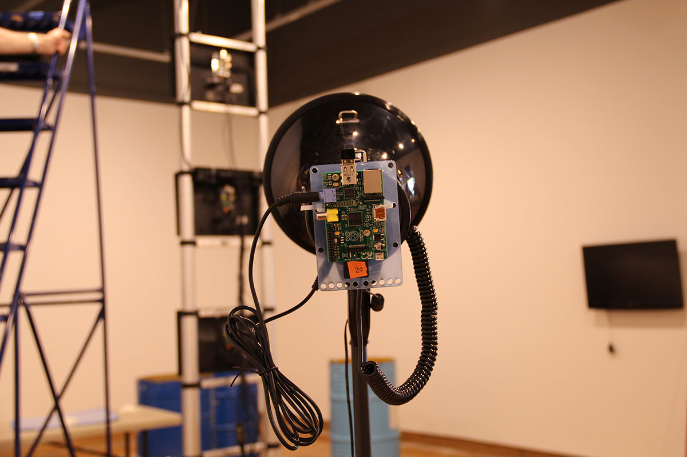
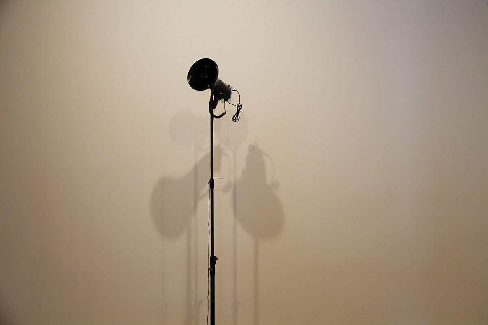

Æffect Lab _ Tecnologías Disruptivas
Disruptivo será todo evento o situación con la capacidad potencial de irrumpir en el psiquismo y producir reacciones que alteren su capacidad integradora y de elaboración.
M. Benyakar.
Æffect Lab es un framework para facilitar la creación de modelos afectivos de comunicación, pertinentes para un determinado espacio, localidad o grupo de personas.
El proyecto consiste en la investigación y creación de una red de comunicación libre basada en la afectividad: una red paralela a internet en la cual se desenvuelve la cooperación y la comunicación humano-humano.
Esta red gira en torno a la creación de diversos prototipos de hardware para colocar mensajes virtuales en el espacio físico. Los prototipos son: el Arma Sonora Telemática, la Ventana de Lecturas Efímeras, el Campo de Afinidades Ubicuas y el Dispositivo Sintetizador de Opinión.
Como base para todos los dispositivos, desarrollamos un módulo llamado LocalNet: un dispositivo capaz de recibir mensajes enviados a la red Æffect Lab y redireccionarlos a los prototipos. Dicha red está conformada por nuestra aplicación web, números de teléfono para recibir mensajes SMS, hashtags de Twitter y redes locales autónomas corriendo una copia de nuestra aplicación web.
Los prototipos que presentamos son sólo algunos ejemplos para ofrecer una panorámica de cómo funciona el framework. Éstos se plantearon a partir de nuestras propias experiencias y necesidades. Buscamos producir una conversación en torno a las posibilidades integradoras de este tipo de herramientas de comunicación, para así generar cuestionamientos sobre el uso y aplicación de estos sistemas en la cooperación cercana con diversas comunidades.
¿Cuáles son los límites físicos y virtuales de comunicaciones que ocurren en espacios de mediación comercial?
¿Qué distancias generan estos límites entre los usuarios de una red?
¿Cómo garantizar la participación colectiva en estructuras sociales en constante transformación, donde la velocidad del desarrollo tecnológico supera nuestras capacidades de aprendizaje?
Æffect Lab opera bajo la lógica del hacking urbano: la aplicación de recursos tecnológicos para modificar elementos de la infraestructura urbana, dotándolos de la capacidad de control telemático.
Con esta exposición damos inicio al proyecto. Mostraremos los primeros acercamientos a la investigación y desarrollo, mismos que continuarán en proceso durante los próximos meses y se materializarán en talleres e intervenciones en México y Estados Unidos.


